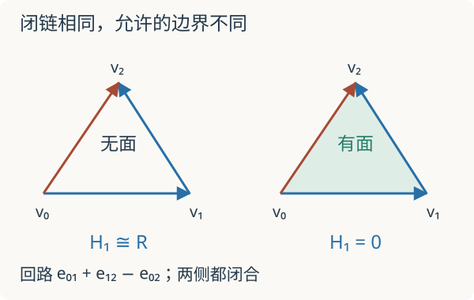

本页目录
基础衔接 03 · 链复形：先区分闭合与边界
为什么一个闭合回路有时能缩掉，有时会留下信息？先修：核、像与商模、同调入口。本讲用完整矩阵计算，把已有拓扑直觉接到同调代数；所有三角形计算的系数域固定为 \(\mathbb R\)。
1. 只有三条边，和填满内部，不是同一个对象
设三个顶点为 \(v_0,v_1,v_2\)，三条有向边为 \(e_{01},e_{12},e_{02}\)，都从小编号指向大编号。一维链是边的实线性组合，零维链是顶点的实线性组合。边界取“终点减起点”，所以
列依次对应三条边，行依次对应三个顶点。例如第一列就是 \(v_1-v_0\)。解 \(\partial_1(a,b,c)^T=0\)，得到 \(-a-c=0,a-b=0,b+c=0\)，故
向量 \((1,1,-1)\) 是沿 \(0\to1\to2\to0\) 走一圈：最后一段与 \(e_{02}\) 的规定方向相反，必须带负号。这是闭链，并不自动等于某个二维对象的边界。
2. 填入一个面，究竟改了什么
若有向三角面 \(f=[012]\) 存在，则
直接相乘得到 \(\partial_1\partial_2=0\)：沿整个面的边界再取端点，每个顶点恰好抵消。这是“边界的边界为零”，让 \(\operatorname{im}\partial_2\subseteq\ker\partial_1\) 成立。于是可以取商
只有边框时 \(C_2=0\)，所以 \(H_1\cong\mathbb R\)；填面后像等于整个闭链空间，所以 \(H_1=0\)。边框上的循环没有消失，它仍是非零链；变化在于它现在被视为一个面的边界，在同调商中等于零。

这也解释了为什么仅数边和顶点不够。此例 \(\operatorname{rank}\partial_1=2\)，\(\dim H_0=3-2=1\)，表示一个连通分量。边框的 Euler 特征为 \(3-3=0=1-1\)；填面后为 \(3-3+1=1=1-0\)。交替维数可以核对计算，却不能单独恢复所有同调群。
3. 让一次错误真实地暴露出来
若误把面的边界写成 \((1,1,1)^T\)，相乘得到 \((-2,0,2)^T\ne0\)。这时像不包含在核中，不能继续写出上面的商。它不是另一种合法的三角形取向；改变取向必须同步改变相关矩阵。
先预测：填面会改变闭链空间维数吗？默认有填面、正确取向。可故意切换最后一项的符号，检查链条件是否仍成立。
默认结果：\(\operatorname{rank}\partial_1=2\)，闭链空间维数 1，边界空间维数 1，\(\dim H_1=0\)。错误取向时实验显示链条件失败，并撤下同调维数，绝不把错误矩阵包装成一个拓扑结论。
4. 从三角形走到一般链复形
链复形是一串模及同态 \(\cdots\to C_{n+1}\xrightarrow{d_{n+1}}C_n\xrightarrow{d_n}C_{n-1}\to\cdots\)，要求 \(d_nd_{n+1}=0\)。定义 \(H_n=\ker d_n/\operatorname{im}d_{n+1}\)。链次数向下走；上链复形次数向上走，写作 \(d^n:C^n\to C^{n+1}\)。计算前先固定约定，不要只看上下标外形。
同调测量正合性失败的程度：在 \(C_n\) 处正合恰好等价于 \(H_n=0\)。但“所有同调为零”不等于每个空间为零。例如 \(0\to\mathbb R\xrightarrow{1}\mathbb R\to0\) 有非零项却同调全零。
再看以次数 1、0 放置的整数复形 \(C_1=\mathbb Z\xrightarrow{\times2}C_0=\mathbb Z\)。\(H_1=0\)，\(H_0=\mathbb Z/2\)。若把系数换成实数，乘二可逆，两个同调都为零。维数直觉看不到整数挠信息；这正是上一讲保留系数环的重要性。
5. 为什么需要分解，而不仅是最终答案
把模 \(\mathbb Z/2\) 看成只在次数零非零的复形 \(D\)，从 \(C\) 到 \(D\) 的映射在次数零取模二、次数一取零。它与微分相容，因为 \(2n\) 模二为零；而且诱导 \(H_0\) 的同构，其他次数也同构。这叫拟同构。两组复形的项明显不同，但同调信息相同。
导出范畴会把拟同构形式地变成可逆映射。继续在链同伦与映射锥中计算链映射、收缩同伦，并用整数自由分解检查为什么拟同构未必有链同伦逆。理解这句话还需要范畴、链映射与链同伦；本讲没有构造整个导出范畴。这里先学会辨认一个实际拟同构，避免把“导出”误当成任意增加高阶修正项。
一个有用的预告是张量积的导出信息。先写出增广的正合列
其中 \(q\) 是模二映射。自由分解的自由项就是上面的 \(C_1,C_0\)；增广列正合，而去掉增广目标后的 \(C\) 在次数零保留 \(\mathbb Z/2\) 同调。现在只对两个自由项及其微分与 \(\mathbb Z/2\) 作张量，再取同调。乘二变为零，得到
次数一的同调变成 \(\mathbb Z/2\)，记为 \(\operatorname{Tor}^{\mathbb Z}_1(\mathbb Z/2,\mathbb Z/2)\)。本讲仅演算该例；张量积的通用定义、分解独立性和一般 Tor 理论尚需后续课程。不能因为学会三角形矩阵，就宣称已经掌握导出运算。
6. 验收题
题一。 只有四条边的正方形边框，用实系数时 \(\dim H_0,\dim H_1\) 为何？添加一条对角线但不添加面呢？
核对边数与秩
连通图的端点矩阵秩为顶点数减一，此处为 3。原边框 \(\dim H_0=1\)，\(\dim H_1=4-3=1\)。加对角线后仍连通、仍无二维面，所以 \(\dim H_1=5-3=2\)。对角线没有“填洞”；若再加入两个三角面才会改变边界空间。
题二。 \(0\to\mathbb Z\xrightarrow{\times3}\mathbb Z\to0\) 与 \(0\to\mathbb Z\xrightarrow{\times2}\mathbb Z\to0\) 是否可能拟同构？
核对同调障碍
次数零同调分别为 \(\mathbb Z/3\) 与 \(\mathbb Z/2\)，不同构，所以不可能拟同构。两者都有两个整数模、微分都单射，并不足以说明等价。
速查与继续学习
先验条件 \(d^2=0\) → 求核得到闭链 → 求像得到边界 → 取商得到同调。下一讲：层、限制与粘合。定义和进一步阅读见 Stacks Project：Complexes 与 Tensor products；三角形矩阵和整数复形是本讲明确展开的计算。资料核查：2026-09-08。
后续计算：张量积、平坦性与 Tor从自由分解继续，解释为什么换系数要保留整个复形。
路线验收：连续作业：从整数分解到导出观点。先独立提交中间计算，再用题解定位需要回补的步骤。